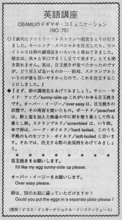

目玉焼きをお願いします。
Osamu and his wife went to a family restaurant for breakfast. They ordered the morning special. The waitress asked them how they wanted their eggs. She explained something very quickly so they couldn't understand her. He wanted to eat an sunny side up egg but he didn't know that word so he asked for scrambled eggs because that's easier to say.
家内とファミリー・レストランへ朝食をとりに行きました。モーニング・スペシャルを注文したら、ウエイトレスは卵の調理方をいろいろと尋ねてきました。彼女は、次々と早口でまくし立てて来ます。とても聞き取れません。実は、目玉焼きがたべたかったのですが、どう言えば良いものか・・・・結局、スクランブルというのが最も言いやすかったので、これを注文することにしました。
まず、卵の調理名をあげてみましょう。サニー・サイド・アップ／Sunny-side up これがいわゆる目玉焼きの状態です。オーバー・イージー／over easy は、目玉焼きの状態で、その両面を焼いたもの。ポーチド／poached は、酢と塩を加えた熱湯の中に卵を割落として作る落とし卵。スクランブルド／scrambled は、いり卵。ゆで卵は、ハード・ボイルド／hard boiled、このうち半熟のものをソフト・ボイルド／soft-boiled と言います。それでは、注文する際の表現例をあげてみましょう。
目玉焼きをお願いします。
I’d like my egg sunny-side up please.
オーバー・イージーをお願いします。
Over easy please.
卵は、別のお皿に盛っていただけますか。
Could you put the egg on a separate plate please?

| © 1995-2013 NACOS International Institute. All Rights Reserved. |